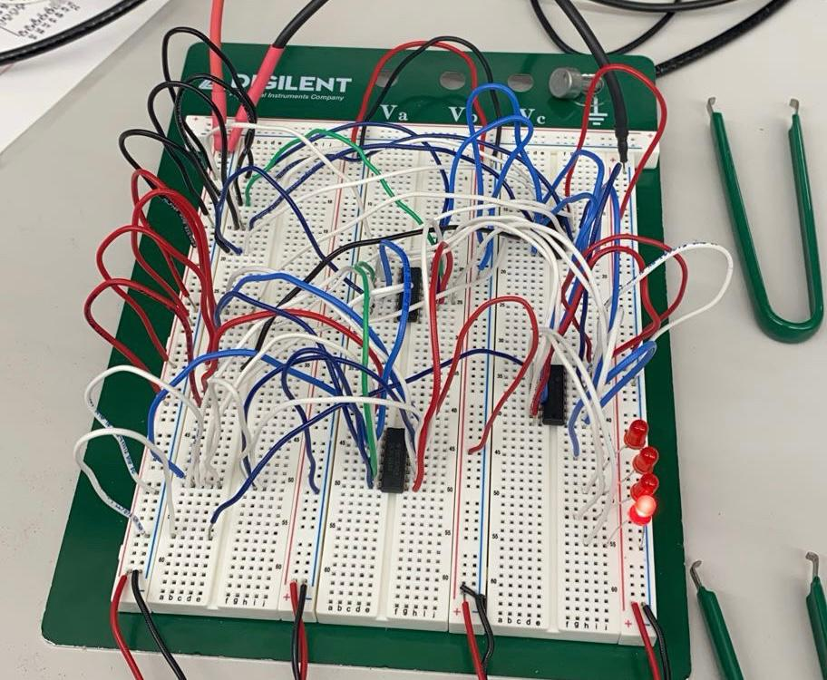
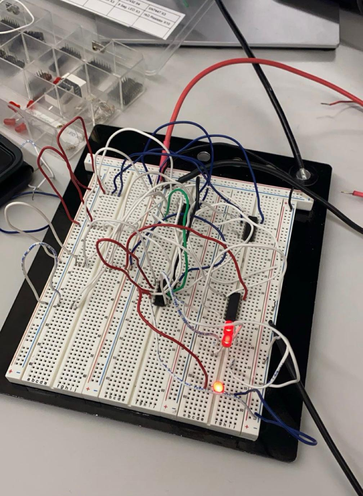

VERIFIED
01
Digital Logic · Hardware
4-Bit ALU ↗
A functional arithmetic logic unit built from multiplexers and full adders, with LEDs displaying each result bit for instant verification.
I'm Ali Hussein, a Computer Engineering student at Texas A&M University. I design and verify digital systems — from ALUs and ARMv8 datapaths to cache simulators and FPGA logic — with a measure-and-verify mindset and a love for how complexity is built from clean building blocks.

I'm drawn to the layer where software meets silicon — datapaths, control logic, memory hierarchies, and the timing that makes them real. I like breaking systems into understandable parts, building them from clean reusable blocks, and proving they work with measurement instead of guesswork.
My focus areas are digital systems, computer architecture, RTL/Verilog design, and verification, with a growing interest in how AI and modern computing reshape hardware. Years of tutoring also taught me to explain complex ideas clearly — which is half the job on any engineering team.
Real engineering work — not buzzwords. Each area below maps to projects you can open and inspect.
Combinational and sequential design — MUXes, full adders, ALUs, FSMs — and full ARMv8 datapaths covering fetch, decode, execute, memory, and write-back.
Directed testing, waveform inspection in GTKWave, on-board FPGA validation, and gdb step-through debugging. Measure and verify, never guess.
C/C++ and ARMv8 assembly, circuit builds on real hardware, ZYBO Z7-10 and Raspberry Pi, comparator and sensor interfacing.
A few systems I've designed and verified. Hover to expand — or open the full command center.

A functional arithmetic logic unit built from multiplexers and full adders, with LEDs displaying each result bit for instant verification.

A complete single-cycle datapath — fetch, decode, register file, ALU, memory, write-back — with control logic for R-type, load/store, and branch.

A configurable set-associative cache simulator with an O(1) LRU policy (hash map + doubly linked list) reporting hit/miss stats from memory traces.

An infrared presence detector that triggers a buzzer through comparator thresholding, calibrated and tested across varying ambient-light conditions.
An on-site assistant that knows Ali's work. Ask about his projects, skills, or experience — built to guide recruiters and engineers through the portfolio.
AIDEN runs right here in your browser with zero setup, answering questions about Ali's hardware and systems work in real time.
I'm eligible to intern in the U.S. and focused on digital systems, RTL design, and verification. Let's talk.